Overview
Artificial intelligence did not begin with modern computers. For over two thousand years, people asked similar questions: can intelligence be built, can behavior be simulated, and can a rule system produce something like thought?
Lesson 01 introduces those roots so students can recognize that modern AI is both a technical project and a cultural project. The same themes keep repeating: automation, control, trust, and what counts as real intelligence.
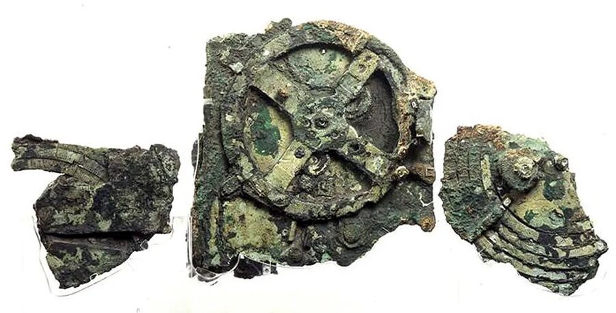
Mythic Prototypes of Artificial Life
Talos (Ancient Greece)
Talos, a bronze guardian said to patrol Crete, is one of history's earliest "robot-like" figures. He acts like a programmed defender with a fixed mission: guard borders and enforce security.
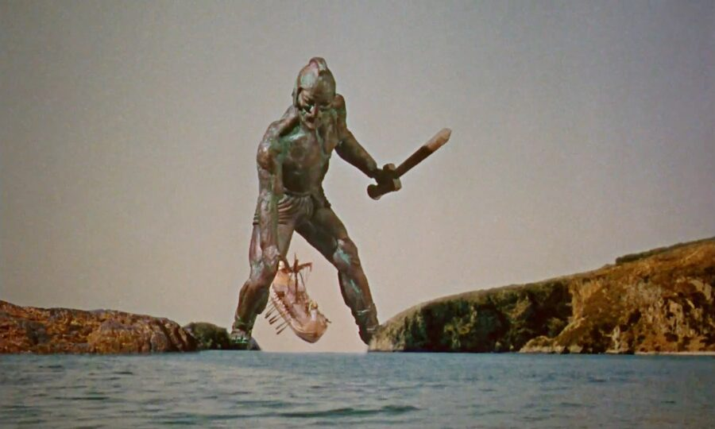
The Golem
The Golem is an animated anthropomorphic being in Jewish folklore that is created entirely from inanimate matter, usually clay or mud. Golem traditions center on a constructed being animated through symbolic commands, prefiguring a major AI question: if behavior comes from encoded instructions, where should moral responsibility live?
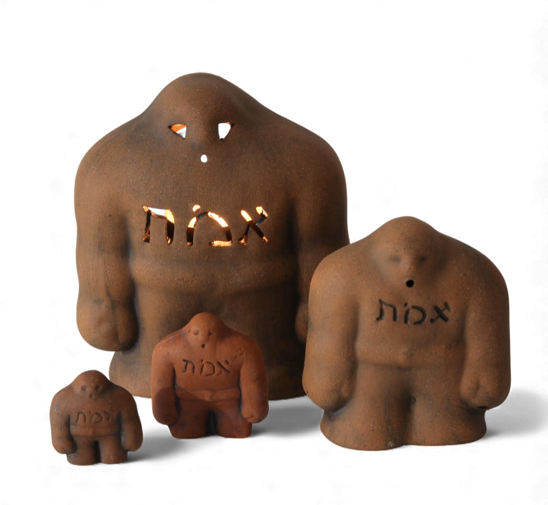
Why myths matter in an AI class
Myths are not technical proofs, but they reveal recurring design concerns: autonomy, obedience, safety constraints, and failure when creators lose control.
From Philosophy to Formal Systems
Anaximander — Natural Mechanisms
Among the earliest thinkers to model the universe with natural mechanisms rather than purely mythic explanation — a radical departure from invoking gods to explain natural order.
Democritus — Atoms and Rules
Proposed that reality is built from indivisible atoms obeying rules — a conceptual ancestor of computational thinking: complex outcomes emerging from simple, repeatable units.
Aristotle — Formal Logic
His Organon made structured reasoning explicit — encoding the rules of valid inference so they could be applied mechanically. Every expert system of the 1980s was, in a sense, Aristotelian.
Ramon Llull extended this trajectory with rotating logical wheels, attempting to combine theological concepts through mechanical rotation — one of the earliest attempts to systematize reasoning as a physical process.
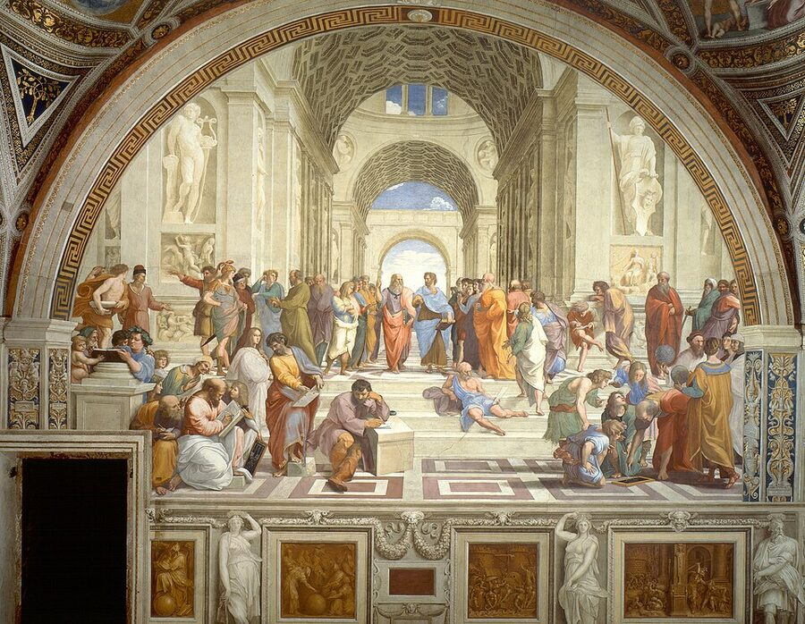
Llullian Circle: The First Logical Computer
How to read it: Llull believed truth could be explored by rotating symbolic categories into new alignments. This is not modern AI, but it is a clear ancestor of the idea that reasoning can emerge from recombining symbols under a system.
"The Machine is Good and Creates."
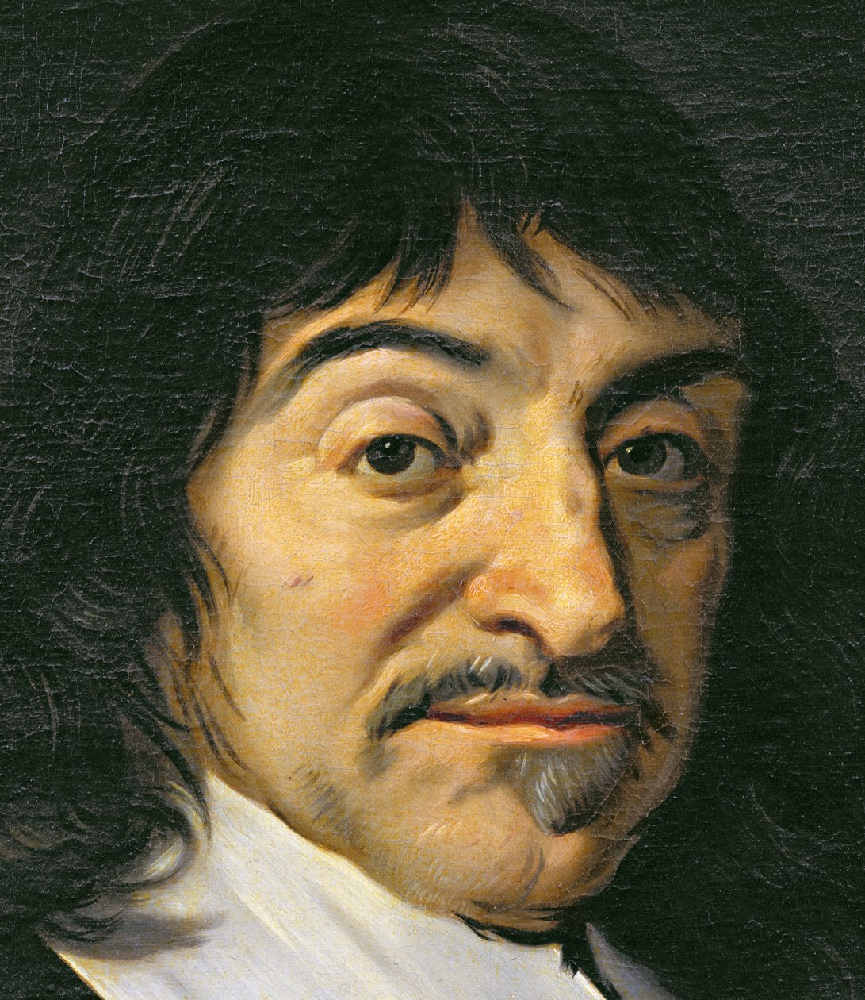
René Descartes — "I Think, Therefore I Am"
Descartes is famous for stripping away every assumption until he found one thing he could not doubt: the act of doubting itself. Cogito, ergo sum — "I think, therefore I am." Thinking, for Descartes, was the one thing that proved he existed as something more than machinery.
Yet Descartes was also the philosopher who argued that animals were essentially mechanical automata — organic machines whose behavior could be fully explained by the movement of fluids and levers, with no inner experience required. A dog yelping in pain was, in his framework, no different from a clock striking the hour: a mechanism responding to its inputs.
This creates a fascinating tension at the heart of AI. Descartes placed the human mind outside the machine — the res cogitans (thinking substance) was distinct from the res extensa (extended, physical substance). A machine could imitate behavior, but it could never truly think or feel. For students, this is the original version of today's debate: what separates a very good imitation of intelligence from the real thing?
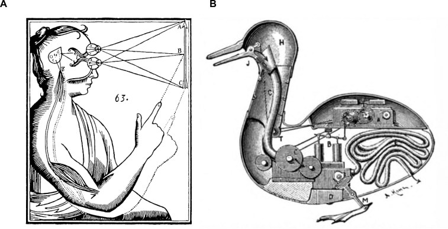
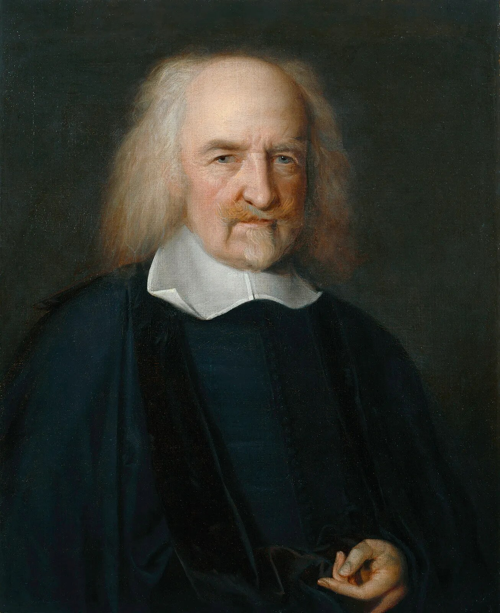
Thomas Hobbes — Thinking Is a Physical Process
Where Descartes drew a sharp line between mind and machine, Thomas Hobbes erased it. In Leviathan (1651), Hobbes argued that reasoning is just arithmetic — adding and subtracting mental marks — and that mental life is ultimately a product of physical motion in the body. There is no immaterial soul doing the thinking; thought is what matter does when it is organized a certain way.
This is a direct philosophical ancestor of modern AI: if thinking is computation and computation is a physical process, then a sufficiently organized machine should be able to think. Hobbes did not build such a machine, but he opened the door.
"Reason is nothing but reckoning."
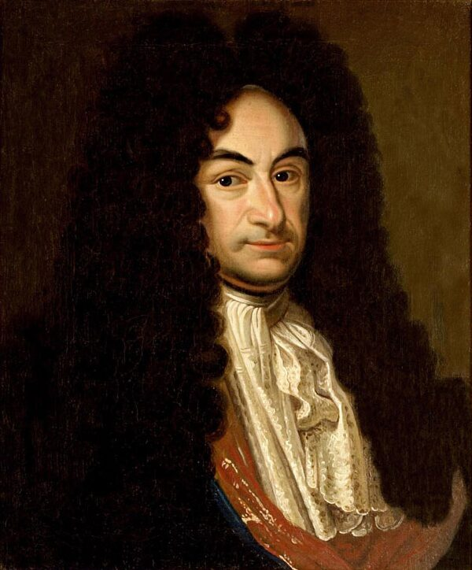
Gottfried Wilhelm Leibniz — Thinking Can Be Reduced to Calculation
Leibniz went further than Hobbes. He envisioned a calculus ratiocinator — a universal logical calculus in which any question, including philosophical and moral ones, could be resolved by calculation. "Let us calculate," he proposed, as though disagreement between people could be settled like an arithmetic problem.
Leibniz also independently invented calculus (at the same time as Newton) and designed one of the first mechanical calculators capable of multiplication and division. He believed the gap between logical thought and mechanical operation was a matter of engineering, not principle.
"Let us calculate, and without further ado, see who is right."
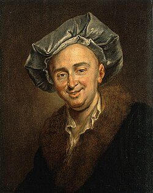
Julien Offray de La Mettrie — L'Homme Machine
In 1748, the French physician La Mettrie published L'Homme Machine — "Man a Machine." His argument was stark: if you build the right physical system, you build a mind. The soul is not a separate substance; it is what a sufficiently complex body does.
La Mettrie extended Descartes's mechanical animals all the way to humans, collapsing the distinction Descartes had carefully preserved. The book was so controversial it had to be published anonymously in the Netherlands. But its central claim — that mind is substrate, not spirit — became the working assumption of neuroscience, cognitive science, and AI.
"The human body is a machine which winds its own springs."
The philosophical fault line
These four thinkers map a spectrum that still runs through every AI debate. Where a student lands on this spectrum shapes how they think about everything from chatbots to consciousness.
Mind is beyond
any machine Hobbes
Thought is
arithmetic Leibniz
Logic can be
mechanized La Mettrie
Humans are
machines
The First Mechanical Computer
The Antikythera Mechanism (~100 BCE)
In 1901, divers salvaging a Roman-era shipwreck near the Greek island of Antikythera pulled up a corroded bronze lump. Decades of X-ray and CT scanning later, researchers confirmed it was a hand-cranked analog computer with at least 30 interlocking gears — built roughly 2,100 years ago.
Turn the crank and the device tracks the solar and lunar calendars simultaneously, predicts solar and lunar eclipses on an 18-year Saros cycle, and models the positions of the five planets known to ancient Greeks. It even accounts for the irregular speed of the Moon across its elliptical orbit.
Nothing of comparable mechanical sophistication appears again in the historical record for over a thousand years. The Antikythera Mechanism is the earliest known analog computer and proof that humans were building programmable calculation machines long before the word "computer" existed.
Why it belongs in an AI timeline
The mechanism encodes a model of reality — a simulation of the sky — into gears and ratios. That is a direct ancestor of what modern computers do: encode a model into a substrate and run it forward. The device also raises a question students will revisit all semester: where is the intelligence — in the machine, in the designer, or in the model?
The Automata Age — Living Machines of the 18th Century
The 1700s were obsessed with a question the philosophers had raised: if thinking is a physical process, what could a sufficiently clever mechanism do? Craftsmen across Europe set out to find the limit. What they built astonished courts, salons, and scientists — and blurred the line between illusion and reality in ways that feel surprisingly modern.
Vaucanson's Digesting Duck (1739)
Jacques de Vaucanson built a mechanical duck with over 400 moving parts that could flap its wings, drink water, pick up grain — and apparently digest and excrete it. The "digestion" turned out to be stagecraft (pre-loaded waste, not actual chemical processing), but the illusion was so convincing that Voltaire called Vaucanson a rival to Prometheus.
Vaucanson also built a mechanical flute player that could perform twelve different melodies with human-like breath control — fingers, lips, and tongue all simulated in bronze and leather. His work was not a trick: he genuinely believed that demonstrating complex biological behavior in mechanism would reveal how living things worked. The duck was a hypothesis about digestion made physical.

The Jaquet-Droz Automatons (1770s)
Pierre Jaquet-Droz and his son Henri-Louis produced three figures that remain among the most sophisticated mechanical objects ever built. The Writer is a child automaton that dips a quill, shakes off excess ink, and writes up to 40 characters of programmable text — the message can be changed by rearranging a set of cams inside the torso. The Draughtsman draws four different pictures. The Musician plays a real keyboard organ, her fingers pressing actual keys and her chest rising and falling as if breathing.
These are not toys. The Writer contains 6,000 parts and produces letters with varying pressure and spacing. When The Musician finishes a piece, she bows. Her eyes follow her fingers. Contemporary witnesses found them deeply unsettling — not because they were crude, but because they were almost right. This unease has a modern name: the uncanny valley.
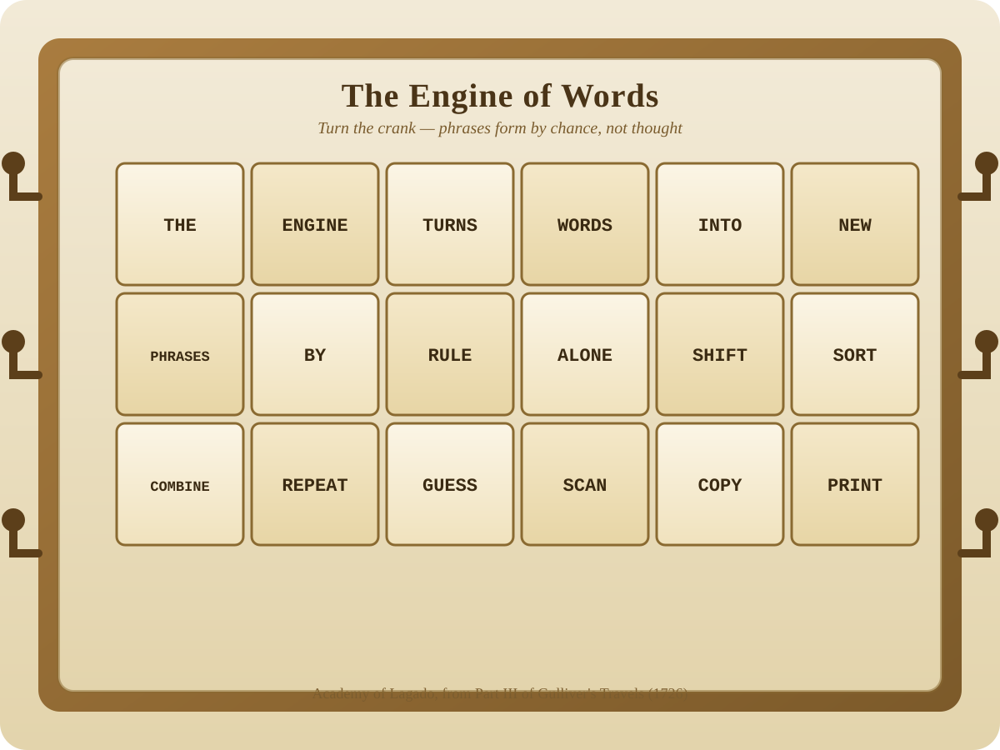
The Mechanical Turk — Automata Culture Meets Fraud (1770)
Against this backdrop of genuine automata, Wolfgang von Kempelen unveiled the Mechanical Turk: a turbaned, robed figure seated at a cabinet, capable of playing chess against human opponents — and usually winning. It toured Europe for decades, defeating Napoleon Bonaparte and Benjamin Franklin.
Unlike Vaucanson's duck or the Jaquet-Droz figures, the Turk was a fabrication. A hidden compartment in the cabinet concealed a human chess master who controlled the figure's arm through a system of levers. The automata craze had created the perfect cover: audiences in 1770 had already seen mechanical ducks digest grain and mechanical children write letters. Why couldn't a machine play chess?
The Turk is the founding case in AI literacy: a powerful demonstration of apparent intelligence that conceals hidden human labor. Amazon named its crowd-sourced labor platform "Mechanical Turk" in direct reference to this — humans doing work that looks automated from the outside.
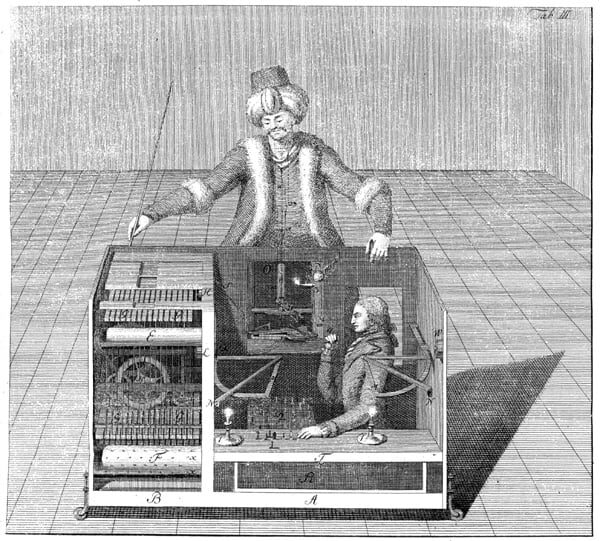
The Mechanical Turk: Look Inside the Cabinet
Student task: first look at the machine as an audience member would. Then reveal the operator. This is the core literacy move: distinguish visible output from hidden labor and control.
From the outside, the Turk looks autonomous. That appearance is the point: the audience sees output, not process.
Why the automata age belongs in an AI class
The 18th-century automata builders were not con artists — most were serious engineers and scientists testing whether biological behavior could be mechanized. But the culture they created made deception easier, because audiences had already learned to expect the impossible from machines. Students who understand this pattern are better equipped to think critically about modern AI demonstrations: a convincing output is not the same as genuine understanding.
Science Fiction and Public AI Imagination
The Engine from Gulliver's Travels (1726)
In Part III of Jonathan Swift's Gulliver's Travels, the Academy of Lagado features a strange Engine: a giant frame filled with word blocks that can be turned and rearranged by handles. Workers scan the new combinations and copy down any sequence that looks meaningful.
Swift wrote the machine as satire, mocking the dream that scholarship could be reduced to random recombination. But for AI history, the image is still important: it imagines language being produced from discrete symbolic units by mechanical operations, making it one of the earliest literary proto-computer ideas in science fiction.
HAL 9000
HAL 9000 (from 2001: A Space Odyssey) helped define public suspicion toward advanced AI: highly capable, opaque, and potentially unsafe when goals conflict with human priorities. HAL's failure mode — prioritising mission completion over human life — remains one of the clearest fictional case studies in AI goal misalignment.
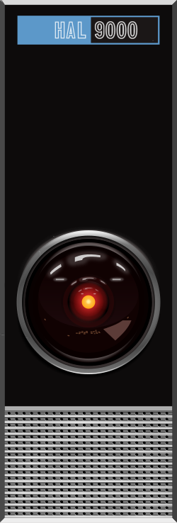
Isaac Asimov's I, Robot
I, Robot is a linked story collection examining robot behavior under the Three Laws of Robotics. Asimov shows that even explicit safety rules can create edge cases, paradoxes, and unintended outcomes.
- A robot may not injure a human being or, through inaction, allow a human being to come to harm.
- A robot must obey the orders given it by human beings except where such orders would conflict with the First Law.
- A robot must protect its own existence as long as such protection does not conflict with the First or Second Law.
For students, this fiction is useful as ethical simulation: it tests how rule-based safety can fail in complex social reality.
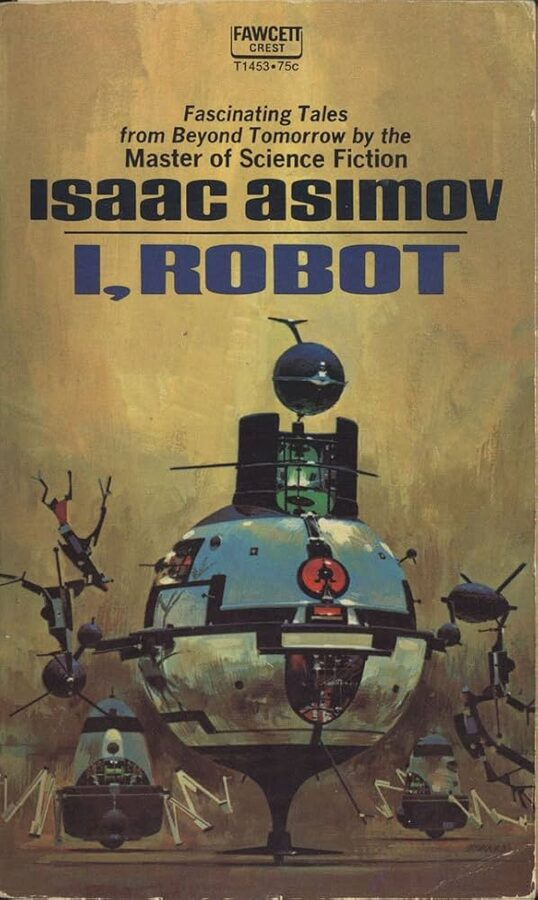
Asimov Logic Debugger
A maintenance robot sees a brick falling toward a human. Another human orders the robot to stay put because the area is restricted.
Select a law to test the decision path.
Frank Herbert's Dune — A World That Banned AI
In the Dune universe (1965–), humanity once built "thinking machines" so powerful that civilization became dependent on them. A galactic uprising called the Butlerian Jihad destroyed every computer and established a lasting commandment: "Thou shalt not make a machine in the likeness of a human mind."
Rather than rebuild AI, Herbert's civilization replaced it with human potential. Mentats are people trained from childhood to think with computer-like logic and speed — living proof that the mind itself can be the most powerful processor. The Bene Gesserit develop extreme awareness and influence through disciplined observation, and Spacing Guild Navigators use expanded consciousness to plot interstellar travel.
Herbert's question is different from Asimov's: not "how do we make AI safe?" but "what happens to human ability when machines do all the thinking?" He warns that outsourcing thought to technology can make people weaker, more dependent, and easier to control — a concern that feels remarkably current in the age of AI assistants and algorithmic feeds.
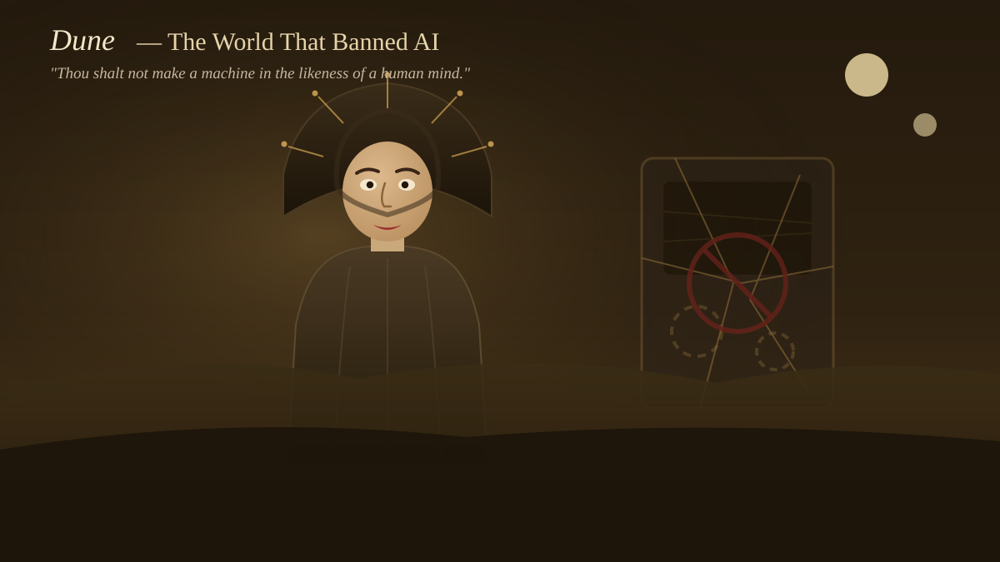
Why fiction belongs in an AI timeline
The Engine, HAL 9000, Asimov's Three Laws, and Herbert's Butlerian Jihad all appeared before the engineering caught up. Science fiction stages the ethical and social questions first — which means students who read it are better prepared for the real debates ahead.
Chronological Timeline of Core Ideas
- Talos
Autonomous bronze guardian in Greek myth.
- Anaximander
Early mechanical modeling of natural systems.
- Democritus
Universe described as atoms and rules.
- Aristotle
Formal logic as structured reasoning.
- Antikythera Mechanism
Greek bronze analog computer tracking planets and eclipses — the earliest known mechanical computing device.
- Ramon Llull
Rotating logical wheels to combine concepts mechanically.
- Descartes
"I think, therefore I am" — but animals are merely machines. The mind–machine boundary enters Western thought.
- Hobbes
Leviathan: reasoning is arithmetic; thinking is a physical process.
- Leibniz
Proposes a universal logical calculus: any question can be resolved by calculation.
- The Engine
Gulliver's Travels imagines a machine that recombines word blocks into new text.
- La Mettrie
L'Homme Machine: build the right physical system and you build a mind.
- Vaucanson's Duck
Mechanical automaton that simulates digestion — biology as engineering.
- Jaquet-Droz Writer
Programmable child automaton with 6,000 parts that writes custom text.
- Mechanical Turk
Chess-playing automaton concealing a human operator — the founding case of AI-style fraud.
- I, Robot
Rule-based robot ethics in fiction.
- Dune
Herbert imagines a civilization that banned AI and trained humans to think like computers instead.
- HAL 9000
Cultural model of intelligent but mistrusted AI.
Classroom Use and Next Step
This lesson establishes conceptual vocabulary for everything that follows in the timeline. Students should leave with two skills: identifying historical roots of AI ideas and critically evaluating claims about machine intelligence.
Reference Focus (for student notes)
- Myths and fiction often predict social concerns before formal engineering catches up.
- Formal logic and symbolic systems are key ancestors of programmable reasoning.
- AI literacy includes spotting performance claims that may hide human labor.